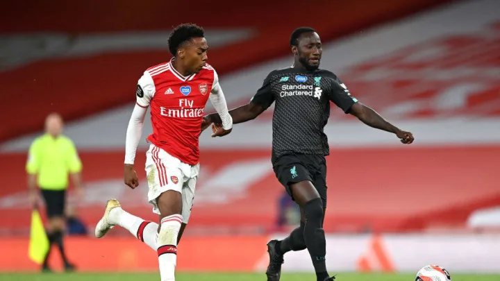
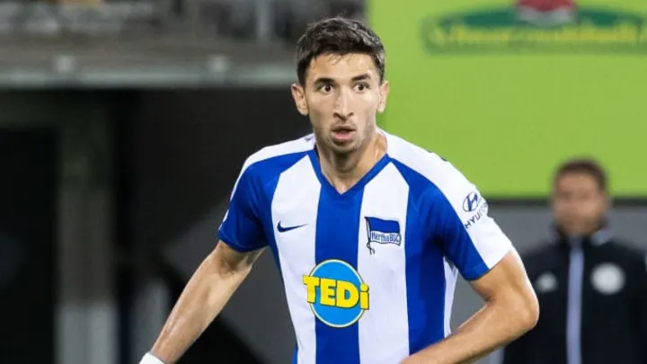
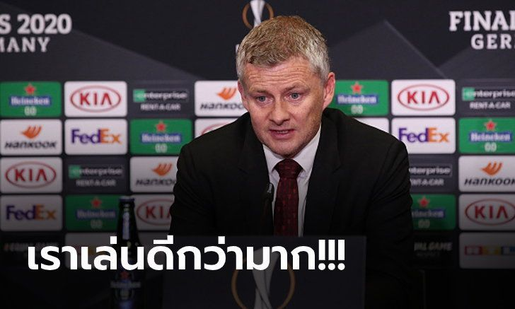
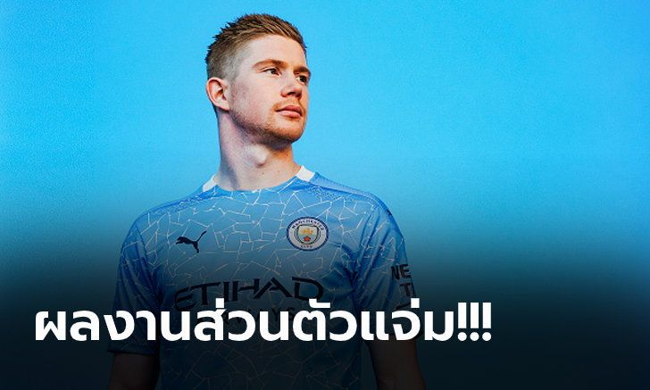
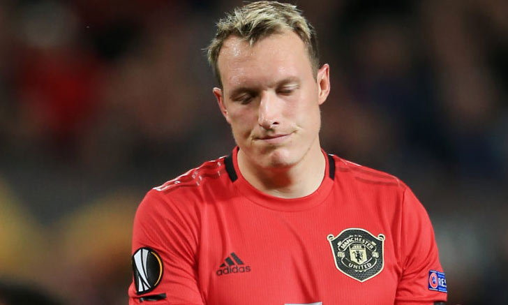

[FEATURE] ในร้ายมีดี! สามแข้งรอวันเฉิดฉายหาก "ไวจ์นัลดุม" ย้ายทีม
จินี่ ไวจ์นัลดุม อาจย้ายออกจาก ลิเวอร์พูล หลังสัญญาเหลือกับทีมเพียงอีกแค่ 1 ปี และยังไม่มีทีท่าว่าการเจรจาจะออกมาในรูปแบบใด
นาบี เกอิตา
แม้จะใส่เบอร์ 8 ในตำนานและเป็นตัวความหวังตอนที่ย้ายมา แต่สถานะของ เกอิตา ตอนนี้ก็ยังเป็นตัวเลือกรองต่อจาก จอร์แดน เฮนเดอร์สัน และ ไวจ์นัลดุม อยู่
ตอนนี้กองกลางทีมชาติกินีน่าจะสามารถปรับตัวกับ พรีเมียร์ลีก ได้แล้ว และหาก ไวจ์นัลดุม ไปก็มีโอกาสสูงมากที่เขาจะได้ลงสนามอย่างต่อเนื่องและงัดฟอร์มเก่งแบบที่ บุนเดสลีกา ออกมา
แต่ถึงแม้ ไวจ์นัลดุม ไม่ย้ายทีมแฟนบอลเองก็ยังอยากเห็น เกอิตา ได้รับโอกาสลงสนามและแสดงความสามารถที่แท้จริงของตัวเองอยู่ดี
มาร์โก กรูยิช
กรูยิช เป็นนักเตะคนแรกที่ เยอร์เกน คล็อปป์ ซื้อหลังย้ายเข้ามาคุมทีมและเขาเองก็พร้อมแล้วที่จะลงสนามกับชุดใหญ่หลังพิสูจน์ตัวเองให้เห็นมาแล้วกับการยืมตัว
กรูยิช ในตอนนี้อายุ 24 ปีแล้ว ซึ่งเป็นอายุที่ควรจะกลับมาเล่นให้กับทีมชุดใหญ่เสียทีแต่หากเขากลับมาขณะที่ ไวจ์นัลดุม ยังอยู่ โอกาสของเขาเองก็ไม่น่าจะมีอยู่เช่นเคย
ตอนนี้ก็มีข่าวลือว่า กรูยิช อาจจะย้ายทีมในช่วงตลาดนักเตะรอบนี้เช่นกัน แต่ ลิเวอร์พูล เองก็คงจะรอดูสถานการณ์ ไวจ์นัลดุม ก่อนจะตัดสินใจว่าจะเก็บเชาไว้หรือไม่
เคอร์ติส โจนส์

หลังได้ก้าวขึ้นมามีส่วนร่วมกับชุดใหญ่ในฤดูกาลนี้หลายๆ คนก็อยากเห็นนักเตะที่เกิดและโตจากเมือง ลิเวอร์พูล ได้รับโอกาสเฉิดฉายยิ่งขึ้น
เช่นเดียวกันหาก ไวจ์นัลดุม ออกไปการแข่งขันในแผงกองกลางก็จะน้อยลงและ โจนส์ ก็จะมีโอกาสลงสนามมากขึ้นและสุดท้ายแล้วก็อาจกลายเป็นตัวหลักของทีมได้อย่าง เทรนต์ อเล็กซานเดอร์-อาร์โนลด์ ก็เป็นได้
น่าผิดหวังสุดๆ "โซลชา" รับสภาพ แมนฯ ยูไนเต็ด กระเด็นตกรอบยูโรปา ลีก
โอเล่ กุนนาร์ โซลชา กุนซือ แมนฯ ยูไนเต็ด สโมสรในศึกพรีเมียร์ลีก อังกฤษ ออกมาเผยหลังเกมที่ต้นสังกัดเป็นฝ่ายแพ้ให้กับ เซบีย่า 1-2 จนเป็นเหตุให้กระเด็นตกรอบในศึกยูโรปา ลีก รอบรองฯ เมื่อคืนวันอาทิตย์ที่ 16 สิงหาคม ที่ผ่านมา
โดยกุนซือชาวนอร์เวย์ เผย "ถือเป็นเรื่องที่น่าผิดหวังสุดๆ และเป็นความพ่ายแพ้ที่ยากเกินรับได้ นั่นก็เพราะเรามองว่าเราเล่นได้ดี และสร้างจังหวะทำประตูมากมาย แต่กลับไม่สามารถส่งบอลเข้าไปตุงตาข่ายได้"
"เราเล่นกันได้ดีกว่าพวกเขาอยู่พอสมควรทั้งในช่วงต้นครึ่งแรก และต้นครึ่งหลัง แต่ผมก็ไม่สามารถโทษลูกทีมของผมได้ อีกมุมก็คือเราพลาดกันเองที่ปล่อยให้พวกเขาเล่นงานเราได้ทั้งที่ครองเกมอยู่ตลอด" โอเล่ กล่าว
สำหรับเกมนัดนี้ "ปีศาจแดง" เป็นฝ่ายออกนำก่อนจากลูกจุดโทษของ บรูโน่ เฟอร์นันเดส ตั้งแต่นาทีที่ 9 แต่ท้ายสุดมาพลาดโดนสองลูกจนแพ้ไป 1-2 พลาดโอกาสลุ้นแชมป์ถ้วยใบนี้ที่เป็นเป้าหมายสุดท้ายของทีมในซีซั่นนี้
ไม่ถึงแชมป์ไม่เกี่ยว! "เดอ บรอยน์" ผงาดซิวแข้งยอดเยี่ยมแห่งปีพรีเมียร์ลีก
เควิน เดอ บรอยน์ มิดฟิลด์ตัวเก่งของ แมนเชสเตอร์ ซิตี้ สโมสรแห่งศึกพรีเมียร์ลีก อังกฤษ คว้ารางวัลนักเตะยอดเยี่ยม พรีเมียร์ลีก ประจำฤดูกาล 2019/20 จากการประกาศของฝ่ายจัด เมื่อวันอาทิตย์ที่ 16 สิงหาคม ที่ผ่านมา
โดย ดาวเตะทีมชาติเบลเยียม ที่แม้จะไม่สามารถพาทีมป้องกันแชมป์ไว้ได้ แต่ผลงานส่วนตัวต้องบอกว่ายอดเยี่ยมเอามากๆ เมื่อจ่ายบอลให้เพื่อนทำประตูไปได้มากถึง 20 แอสซิสต์
ส่งผลให้ได้รับคะแนนโหวตจากแฟนบอล และคณะกรรมการเข้ามาเป็นอันดับหนึ่ง เอาชนะทั้ง จอร์แดน เฮนเดอร์สัน, เทรนท์ อเล็กซานเดอร์-อาร์โนลด์, ซาดิโอ มาเน่ (ลิเวอรพูล), แดนนี่ อิงส์ (เซาธ์แฮมป์ตัน), นิค โป๊ป (เบิร์นลี่ย์) และ เจมี่ วาร์ดี้ (เลสเตอร์ ซิตี้)
ทำให้เจ้าตัวผงาดคว้ารางวัลที่สองของปีนี้ หลังก่อนหน้านี้สามารถคว้ารางวัลนักฟุตบอลยอดเยี่ยมแห่งปีจาก บีบีซี สื่อดังของประเทศอังกฤษ มาครองแล้ว
สรุปรางวัลยอดเยี่ยมของ พรีเมียร์ลีก ฤดูกาล 2019/20
ผู้จัดการทีมยอดเยี่ยม: เยอร์เก้น คล็อปป์ (ลิเวอร์พูล)
นักเตะยอดเยี่ยม: เควิน เดอ บรอยน์ (แมนฯ ซิตี้)
ดาวรุ่งยอดเยี่ยม: เทรนท์ อเล็กซานเดอร์-อาร์โนลด์ (ลิเวอร์พูล)
ประตูยอดเยี่ยม: : ซน ฮึง-มิน (ท็อตแน่ม ฮ็อทสเปอร์) * นัดที่ยิงใส่ เบิร์นลี่ย์
เดี๋ยวขายไม่ออก! แมนฯ ยูไนเต็ด หาทีมสนใจซื้อ "โจนส์" ซัมเมอร์นี้
กลายเป็นแข้งส่วนเกินเสียแล้วเมื่อมีรายงานจาก มิเรอร์ ว่า แมนเชสเตอร์ ยูไนเต็ด ทีมในศึก พรีเมียร์ลีก กำลังหาสโมสรที่ให้ความสนใจซื้อตัว ฟิล โจนส์ กองหลังจอมเหวอไปร่วมทีมในช่วงซัมเมอร์
สื่อดังเมืองผู้ดีระบุว่า ทีม ปีศาจแดง ตัดสินใจยกเลิกการผ่าตัดที่หัวเข่าเพื่อรักษาอาการบาดเจ็บของเซ็นเตอร์แบ็คชาวอังกฤษ หลังจากที่ได้รับแจ้งว่าการผ่าตัดจะทำให้เขาต้องปิดเทอมยาวไม่ได้ลงสนามไปถึงปีหน้า
โจนส์ เตรียมที่จะขึ้นเขียงในวันอาทิตย์นี้เพื่อรักษาอาการบาดเจ็บครั้งใหญ่ที่เกิดขึ้นในระหว่างการเตรียมตัวกลับมาลงสนามหลังจากช่วงล็อคดาวน์เมื่อเดือนมิถุนายนที่ผ่านมา อย่างไรก็ตามจากการวินิฉัยอาการพบว่าเขาจะไม่สามารถลงเล่นได้เป็นเวลา 5 เดือน ซึ่งทำให้ทีมแพทย์ของสโมสรเลือกที่จะใช้วิธีฟื้นฟูร่างกายแทน
ในขณะเดียวกัน ยูไนเต็ด ก็กำลังมองหาสโมสรที่ต้องการซื้อกองหลังวัย 28 ปีในช่วงซัมเมอร์นี้ หลังจากที่เจ้าตัวย้ายมาจาก แบล็คเบิร์น โรเวอร์ส เมื่อ 11 ปีก่อนด้วยค่าตัวประมาณ 16.5 ล้านปอนด์ โดยพวกเขาเชื่อว่าหากปล่อยให้นักเตะต้องนั่งรอโอกาสข้างสนามต่อไปอาจจะทำให้ไม่สามารถปล่อยตัวออกจากสโมสรได้